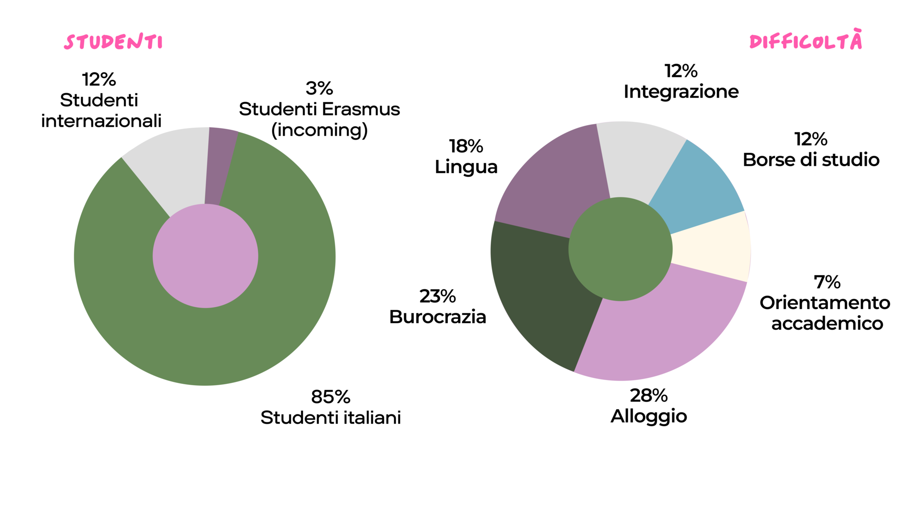
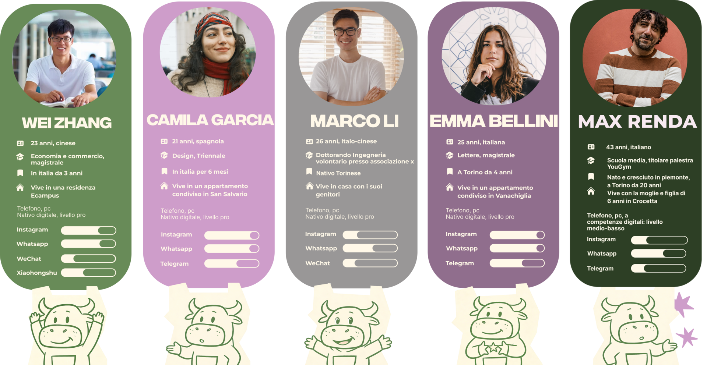
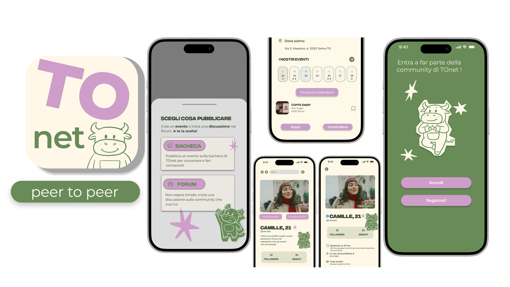

01. Cos'è Tonet?
Totem e applicazione
“Tonet” è un progetto universitario di gruppo che si colloca nell’ambito di UX e UI. E’ una piattaforma creata per fornire aiuto concreto e spazi condivisi dedicati agli studenti universitari internazionali a Torino. Una simpatica mascotte toro guida l‘utente attraverso un’interfaccia semplice e intuitiva divisa in: FAQ, Bacheca eventi, forum e mappa.
02. Ricerca sul campo
Quanti studenti internazionali ci sono a Torino?
Attraverso uno studio dettagliato e interviste a campione abbiamo individuato il numero di studenti internazionali a Torino e le loro difficolta' principali, in modo da progettare la soluzione più efficace.

03. Studio del target
Personas
I profili di quattro giovani rappresentano il target di riferimento, con i loro bisogni, volontà e abitudini digitali.

04. Il progetto
Applicativi
